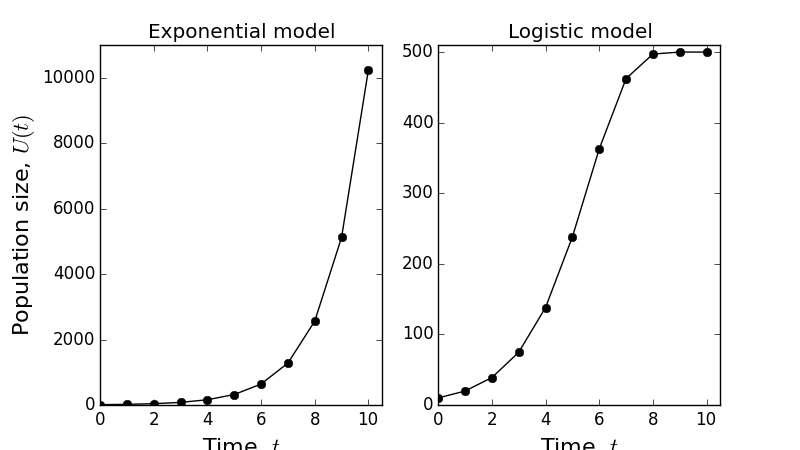

Lecture 2. Introduction to Difference Equations#
2.1 From exponential to logistic growth#
Recall Example 2 from Lecture 1, about population growth of rabbits. The equation we used to model this situation (Equation 1) is an example of a difference equation.
Definition 1
Suppose we have a quantity \(U(t)\) that is a function of time, \(t\). A difference equation for \(U(t)\) is an equation of the following form
for some function \(f\).
In other words, a difference equation tells you the value of \(U\) at time \(t+1\) as a function of the value of \(U\) at time \(t\).
Note
We can generalise this to \(U(t+\tau)=f_{\tau}[U(t)]\) for some constant time \(\tau\). However, in practice, you can always choose your units so that \(\tau=1\). For example, foxes breed once per year, so it makes sense to use one year as your unit of time. However, some species of albatross breed only once every two years. In this case you could set \(\tau=2\) and have ‘one year’ as your unit of time. But instead you may choose to have ‘two years’ as your unit of time and then we can stick with \(\tau=1\). With this in mind, we say that ‘without loss of generality’ we can set \(\tau=1\), and thus use Equation (4) as our definition of a difference equation.
Going back to Example 2, notice that we can simplify Equation (1) by setting \(r=a-d\) to give
noting that \(r>-1\) (since \(0 \leq d \leq 1\) and \(a>0\) ). The model in Equation (5) is called the discrete exponential model (or sometimes just ‘exponential model’ for short). We call \(r\) the net reproduction rate when we are modelling population growth. However, Equation (5) can be used to model anything whose growth over time is proportional to its value. For example, we can use it to model the growth of someone’s student loan debt over time once the have finished University. Here, \(U(t)\) is the value of the debt and \(r\) is the interest rate.
For now let’s go back to our rabbits on an island. Suppose the net reproductive rate is \(r=1\), which is big, but rabbits are well-known as prolific breeders.
Time, \(t\) years |
0 |
1 |
2 |
3 |
4 |
5 |
6 |
7 |
8 |
9 |
10 |
|---|---|---|---|---|---|---|---|---|---|---|---|
Number of rabbits, \(U(t)\) |
10 |
20 |
40 |
80 |
160 |
320 |
640 |
1280 |
2560 |
5120 |
10240 |
Table 1: Change in rabbit population over time, using the model in Equation (5) with \(r=1\) and \(U(0)=10\).
In Table 1 we see that after 10 years, we have more than ten thousand rabbits on our island. Let’s hope it’s a reasonably big island! You may have noticed that \(U(t)=U(0) 2^{t}\). Indeed, we have the following general result
Proposition 1
\(U(t)=U(0)(1+r)^{t}\) is a solution to Equation (5).
Proof. Plugging \(U(t)=U(0)(1+r)^{t}\) into the right-hand side of Equation (5) gives RHS \(=(1+r) U(t)=(1+r) U(0)(1+r)^{t}=(1+r)^{t+1} U(0)\). Now notice that \((1+r)^{t+1} U(0)=\) \(U(t+1)=L H S\). Hence \(U(t)=U(0)(1+r)^{t}\) solves Equation (5).
Note
RHS stands for ‘right-hand side’ and \(L H S\) stands for ‘left-hand side’.
We can use the result of Proposition (1) to calculate the number of rabbits in \(N\) years time for any \(N\). For example, assuming \(r=1\), in 20 years time there will be \(10 \times 2^{20}\) rabbits, which is more than ten million. In 30 years there will be more than ten billion. As it happens, these numbers are not far off what really happened in Austrtalia during the late 1800s and early 1900s. However, if we keep going, in 270 years, there will be more rabbits on the island than atoms in the known universe, which is both a flat contradiction and terrifying. The moral of the story is, unless we are only concerned with short times, we will need a better model.
So what is missing in our current model? Well, it currently does not account for the fact that rabbits must eat in order to survive and reproduce, and there is only a finite amount of vegetation on the island. To model this fact, we incorporate a competition term, \(r U^{2}(t) / K\), as follows
where \(K>0\) is a constant. The reason for using \(U^{2}(t)\left(=[U(t)]^{2}\right)\) in the competition term is that it takes two rabbits to compete, so the amount of possible competition between \(U(t)\) rabbits is proportional to \(U^{2}(t)\). We can re-write Equation (6) as
This is called the discrete logistic model (sometimes also referred to as the ‘discrete logistic map’ or just ‘logistic model’).
Time, \(t\) years |
0 |
1 |
2 |
3 |
4 |
5 |
6 |
7 |
8 |
9 |
10 |
|---|---|---|---|---|---|---|---|---|---|---|---|
Number of rabbits, \(U(t)\) |
10 |
20 |
39 |
75 |
138 |
238 |
363 |
462 |
497 |
500 |
500 |
Table 2: Change in rabbit population over time, using the model in Equation (7) with \(r=1\), \(K=500\) and \(U(0)=10\).
In Table 2, the number of rabbits for the discrete logistic model is shown for the first ten years after introduction to the island, where \(r=1\) and \(K=500\). In Figure 3, we see how the logistic model compares to the exponential model. Whilst in the exponential model the population just grows and grows, the logistic model has the rabbit population levelling out at about \(U(t)=500\).
Why 500? Where have we seen that before? Well, it’s the value of \(K\), right? Indeed, \(K\) is an example of what is called a ‘steady state’ and what we have seen is an example of ‘convergence to a steady state’. Let’s define these concepts.
Definition 2
For a difference equation, \(U(t+1)=f[U(t)]\), a steady state is a constant, \(U_{*}\), such that \(U_{*}=f\left(U_{*}\right)\). We say that a difference equation converges to the steady state, \(U_{*}\), if \(U(t) \rightarrow U_{*}\) as \(t \rightarrow \infty\).
Example 4
What is the steady state of Equation (7) for \(r>0\) ?
Solution.
By definition, this is a number \(U_{*}\) such that
Thus either \(U_{*}=0\) or we can divide through by \(U_{*}\) to give \(r\left(1-U_{*} / K\right)=0\), which means that \(U_{*}=K\).
In Table 2 and Figure 3b we see that the population converges to the steady state \(U_{*}=K\), but not \(U_{*}=0\). In population modelling, the constant \(K\) is referred to as the carrying capacity of the environment, because it denotes the number of organisms (e.g. rabbits) that the environment can sustain (i.e. ‘carry’) due to its resource richness.
Figure 3: Comparison between exponential and logistic growth models.
In general, it is not always straightforward to determine analytically which steady state a system converges to, or if it will converge at all. Next lecture, we will see that the discrete logistic model sometimes does not converge, depending on the parameter values we choose.
2.2 Analytic solutions for logistic growth#
Perhaps the best way to find out how a difference equation will behave over time is to find an exact analytic solution, but this is not always possible. For the exponential model, we were able to find such a solution (Proposition 1). However, this is not possible in general for the logistic model (give it a try and you’ll see how hard it is!).
Instead, we might try to find another model; one that can be solved exactly but yet retains similar qualitative properties as the logistic model, i.e. that it accounts for births, deaths, and also the carrying capacity of the environment. Indeed it is a general principal of model building that it can be valuable to construct models with analytic tractability in mind. One example of this is the following
where \(M>0\) and \(R>1\). We will call this the fisheries model as it was originally introduced to model fisheries (it is also sometimes referred to as the Beverton-Holt model after the people who introduced it). Like Equation (7), Equation (9) has two steady states, as follows.
Proposition 2
Let \(U_{*}\) be a steady state of Equation (9). Then either \(U_{*}=0\) or \(U_{*}=K\), where \(K:=M(R-1)\). Note that \(K>0\).
Proof. The equation defining \(U_{*}\) as a steady state is
so either \(U_{*}=0\) or \(M R / M+U_{*}=1 \Longrightarrow M R=M+U_{*} \Longrightarrow U_{*}=M(R-1)\).
However, we go further and show the following.
Proposition 3
If \(U(t)\) is governed by the fisheries model (Equation 9) then
Proof. [This is a bit tedious and uninspiring so don’t worry about understanding it in full. I just put it in for completeness.] Plugging Equation (11) into the right-hand side of Equation
(9) gives
(multiply top and bottom by: \(\quad U(0)+[K-U(0)] R^{-t}\) )
\(=\frac{M R(R-1) U(0)}{R U(0)+[M(R-1)-U(0)] R^{-t}}\)
\(=\frac{M(R-1) U(0)}{U(0)+[M(R-1)-U(0)] R^{-(t+1)}}\)
(cancel \(R \mathrm{~s}\) )
\(=\frac{K U(0)}{U(0)+[K-U(0)] R^{-(t+1)}}\)
\((K=M(R-1))\)
\(=U(t+1)\),
which is the left-hand side of Equation (9).
Figure 4: Example plots of the model in Equation (9). Notice that both plots have \(K=500\), but the convergence to \(K\) is faster in the second plot.
This means that, for the fisheries model, we use Equation (11) once for all time, rather than needing to calculate \(U(t)\) separately for each time step. Two example plots of Equation (11) are shown in Figure 4.
Lecture 2 Homework exercises#
Exercise 3
For the logistic model (Equation 7), when \(U(0)=10\) and \(K=100\), calculate \(U(1), \ldots, U(10)\) for the following values of \(r\) : (a) \(r=1\), (b) \(r=1.5\), (c) \(r=2.2\), (d) \(r=2.5\), (e) \(r=3\).
Plot the graph of \(U(t)\) against \(t\) for each of the five cases and describe the solution qualitatively. If you are keen, you can extend this to values higher than \(t=10\). Feel free to use a computer package (e.g. Excel), if you know how, but this is not mandatory.
Exercise 4
Another model of population growth is given by
(a) Find the steady state solutions for this model, assuming \(r \neq 0\).
(b) Using \(U(0)=10\) and \(K=100\), calculate \(U(1), \ldots, U(10)\) for the same values of \(r\) as in Question 3 (but using Equation 12).
(c) For each of the five cases, compare the solutions with the corresponding solutions from Question 3. What does this comparison tell you about choosing models for modelling population growth?
Exercise 5
A farmer owns some sheep. They breed each year and the farmer sells a fixed number each year for food. Explain all the terms in the following model of this situation
(a) Show that
(b) Plot \(U(t)\) against \(t\) for \(0 \leq t \leq 7\) in the case \(U(0)=100, r=1\) and \(s=101\).
(c) Plot \(U(t)\) against \(t\) for \(0 \leq t \leq 7\) in the case \(U(0)=100, r=1\) and \(s=99\).
(d) If the farmer chooses to sell 101 sheep per year, what does that mean for his flock?
(e) Find the steady state solution to this model. What strategy for selling sheep must the farmer have to maintain a steady state?